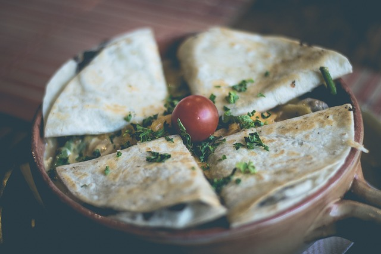

HOME
Chicken Quesadillas

Ingredients
- Flour tortillas (4)
- Cooked chicken breast (1 cup, shredded)
- Shredded cheese (1 cup, cheddar or Mexican blend)
- Salsa (optional)
- Sour cream (optional)
Instructions
- Heat a large skillet over medium heat.
- Place one tortilla in the skillet and sprinkle half of the shredded cheese over it.
- Add shredded chicken evenly over the cheese.
- Top with the remaining cheese and place another tortilla on top.
- Cook until the bottom tortilla is golden brown, then carefully flip and cook the other side.
- Remove from skillet, cut into wedges, and serve with salsa and sour cream.